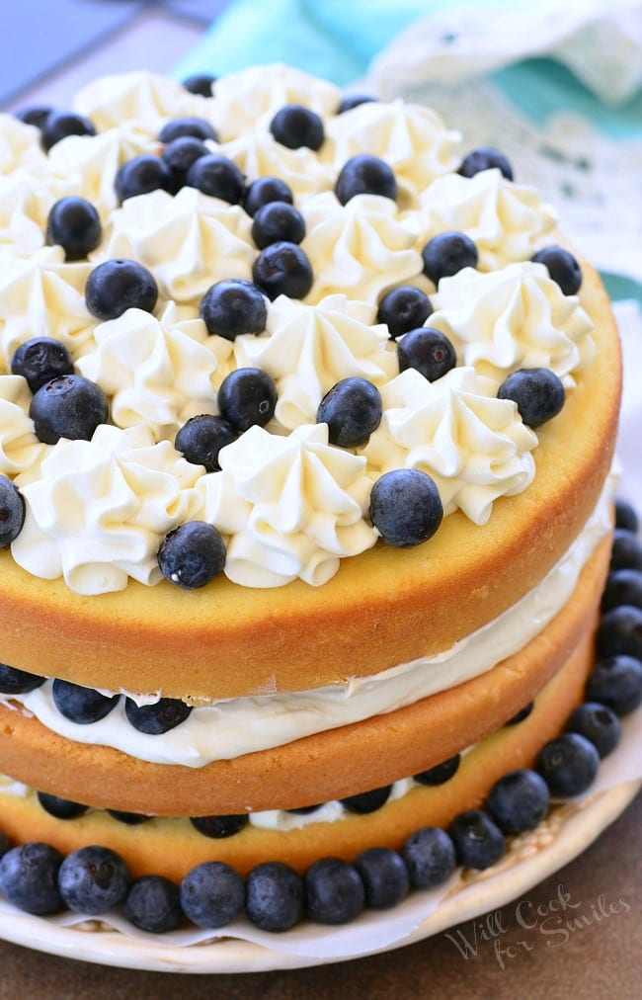

BLUEBERRY CAKE
- To prepare this delicious cake recipe, take a large bowl and add corn flour and baking powder in it, mix well.
- Take another bowl and beat egg whites in it with the help of an electric beater. Add these fluffy egg whites to the flour mixture and mix once again. Next, add apple juice, milk, and vegetable oil to the cake batter. Stir the mixture continuously.
- Take a baking dish and grease it with vegetable oil and pour the cake mix in it. Sprinkle crushed blueberries in the cake mix and place the baking dish in an oven.
- Bake the cake at 200 degree Celsius for half an hour. When done, take out the baking dish and allow it to cool on a wire rack. Then, carefully take out the cake with the help of a knive. Serve immediately.